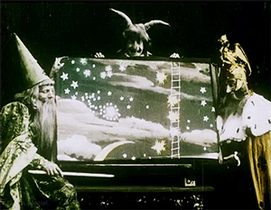

Bienvenue sur le blog de cinéma
Bienvenue sur votre BlogCinéma. Sur ce site vous retrouverez vos films , bandes-annonces , series et manga preférées.
Vos Exclus
Ici,vous pouvez retrouver toutes vos dernières sorties sur notre blog, les nouvelles bandes-annonces sur vos films, séries et manga.
La critique de la semaine
Archer est une série quasi méconnue dans nos contrées.
Il faut dire qu'en dehors des productions de Matt Groening et de Seth MacFarlane (et encore, American Dad est diffusé par paquet de 10 les dimanches midi sur NRJ12, pas vraiment la fête), l'animation américaine est discrète en dehors du territoire US. Ou alors c'est juste en France, les chaînes françaises étant assez frileuses dès qu'il s'agit de passer une série qui sort des sentiers battus. Parce qu'Archer n'a rien à voir avec les Simpsons, ou même American Dad ou Family Guy. Déjà, rien qu'au niveau du visuel, on a affaire à une absence de 3D, des animations saccadés, des décors réels ou vieillots, et des personnages dessinés à la truelle et entourés d'un gros trait noir. Cet aspect démodé est volontaire, mais épouse aussi l'univers de la série, qui se déroule en pleine guerre froide - et ce même si Archer se permet des fantaisies futuristes, mais chut, c'est à vous de le découvrir. On peut noter cependant des améliorations de ce côté-là à partir de la saison 5 et surtout dans la 6, qui me paraît moins saccadé et intégrant plus d'images de synthèses pour les arrières-plans ou les séquences dynamiques - genre courses-poursuites.
Archer marche grâce à deux éléments : ses situations complètement outrancières et son ton déjanté. Ton déjanté qui rejoint celui d'Arrested Development, et ce n'est peut-être pas un hasard vu que certains acteurs de cette série doublent dans Archer (Jessica Walter, Jeffrey Tambor et David Cross). Archer est rempli de traits d’esprit, de running gags, de flashbacks savoureux et de dialogues déclamés aussi vite qu’une partie de ping-pong ; chaque épisode est un prétexte à balancer de la punchline par camion entier, et franchement, je ne me souviens pas m’être ennuyé un seul instant durant les 6 saisons que dure la série. Il y a bien sûr des bas, des épisodes moins inspirés que d’autres (dans quasiment toutes les saisons), mais jamais de moments chiants ou répétitifs, il y a toujours la petite réplique ou la situation qui fait sourire de nouveau. Et puis, les personnages sont portés par leurs doubleurs, que ce soit ceux déjà cités ou encore H. Jon Benjamin qui éructe en Archer, ou Aisha Tyler, ancienne de Ghost Whisperer et qui se retrouve en bombe métisse perpétuellement vannée ici.
Au fil des 6 saisons, nos barbouzes de l’extrême vont vivre des moments épiques, mais pas forcément dans le bon sens du terme. Complètement amorale, la série nous trimballe aux quatre coins de la planète, parodie des dizaines de films et ne se refuse rien. Si la saison 5 renouvelait la série en changeant de cadres et d'enjeux - nos espions devenant des dealers de drogue et accessoirement les agents d'une chanteuse de country, la sixième est plus classique, avec à nouveau l'agence d'espionnage et des missions secrètes en pagaille. Mais j'avoue que cette saison m'a plus fait rire que la précédente, avec des épisodes bien barrés, les personnages secondaires toujours aussi cool - que ce soit Slater, Ray ou encore Krieger - et des tonnes de punchlines savoureuses ; aussi, la relation entre Archer et Lana se fait plus présente, permettant à la série d'élargir ses thèmes comiques - même si cela se fait au détriment de Mallory, moins présente (et la non-présence de Woodhouse me désole).
Archer est actuellement diffusé tard le soir, les dimanches si je ne dis pas de bêtise, sur France 4. Très tard, genre la deuxième voire troisième partie de soirée. Pas vraiment un horaire décent pour une série d’une telle qualité, meilleur animé occidental actuel. Mais bon, c'est déjà bien qu'elle soit diffusée après tout, d'autres ne le sont pas.